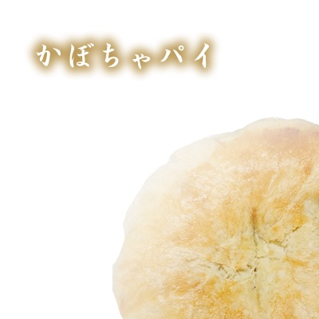
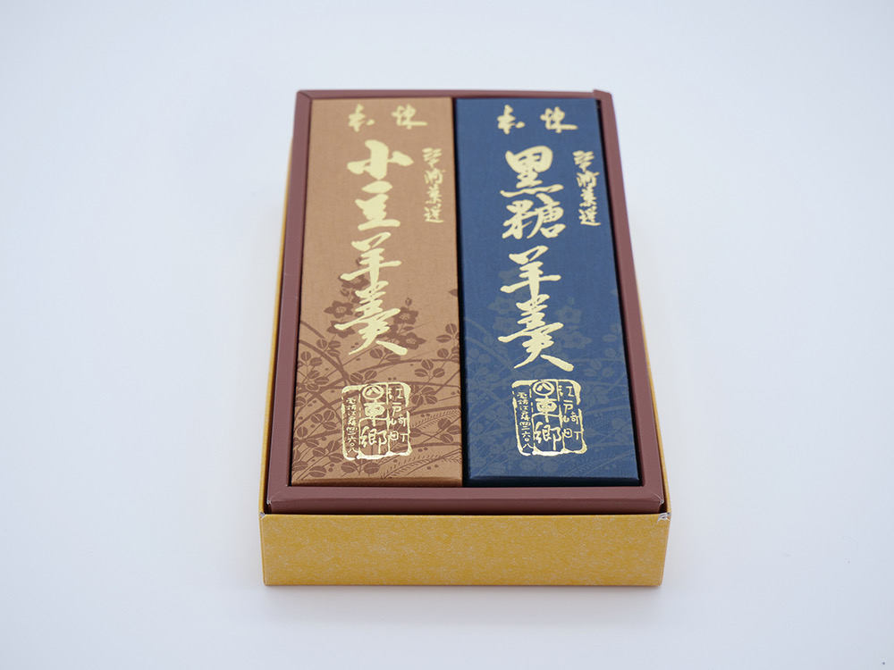

頁を繰る
壱ノ章 — 伝統
守り続けているのは、派手さではなく誠実さです。甘さは控えめに、素材は正直に。今日焼いた菓子を、今日いちばん美味しい状態でお渡しする——それだけを百七十年、繰り返してきました。
江戸の終わり、安政元年。東郷菓子舗は茨城・江戸崎の商店街に暖簾を掲げました。以来、戦争を越え、時代の波を越えて、この町の「甘い記憶」であり続けています。
日本唯一の"夢結び大明神"として知られる大杉神社。その御用菓子商を務め、祈願と感謝の菓子を納めてきました。いまも境内の「結夢庵」で縁起菓子をお作りしています。
地元名産・江戸崎かぼちゃが国の地理的表示保護制度(GI)に登録。その濃厚な甘みを白餡に炊き上げた「かぼちゃパイ」は、江戸崎土産の代名詞になりました。
稲敷市でただ一軒、百年を超えて続く菓子舗として。変わらぬ製法と、変わらぬ距離感で、今日も店先でお待ちしています。
弐ノ章 — 銘菓
全国でここだけの、GI認証「江戸崎かぼちゃ」の菓子。ホクホクとした甘みを白餡に炊き上げ、香ばしいパイ生地で包みました。

EDOSAKI KABOCHA PIE
地元の畑で育った江戸崎かぼちゃだけを使い、ひとつずつ店の窯で焼き上げます。手土産に、参拝みやげに、当店いちばんの人気者。
1個 120円(税込)
品書き
昔ながらの窯で焼く看板商品。しっとりとした生地と素朴な甘さは、百七十年の定番。
ふっくら焼いた皮に、甘さ控えめの粒餡をたっぷりと。
藍の箱に金の箔押し。贈答に喜ばれる、練りの確かな定番羊羹。
大粒の栗を贅沢に。お茶請けの顔ぶれ。
季節の涼菓。夏の江戸崎の楽しみです。
春夏秋冬、職人が季節を写し取ります。最新の意匠はInstagramで。
今日の上生菓子、季節の新作は Instagram でお知らせしています。
@tougoukashiho参ノ章 — 御用菓子
「あんばさま」と親しまれる関東の古社・大杉神社は、日本で唯一の"夢結び大明神"。東郷菓子舗は古くよりその御用菓子商を務め、境内入口の「結夢庵(ゆいむあん)」にて、参拝の方々へ縁起菓子をお作りしています。参拝のあとに、願掛けの手土産に。
黒糖と吉野葛を練り込んだ皮に込めたのは、夢が叶うようにとの願い。
大杉大明神の眷族「ねがい天狗」「かない天狗」を象った縁起最中。
結夢庵でしか出会えない、参拝みやげの定番。
結 — お取り寄せ・店舗

支店 — 大杉神社境内
{kind=link}